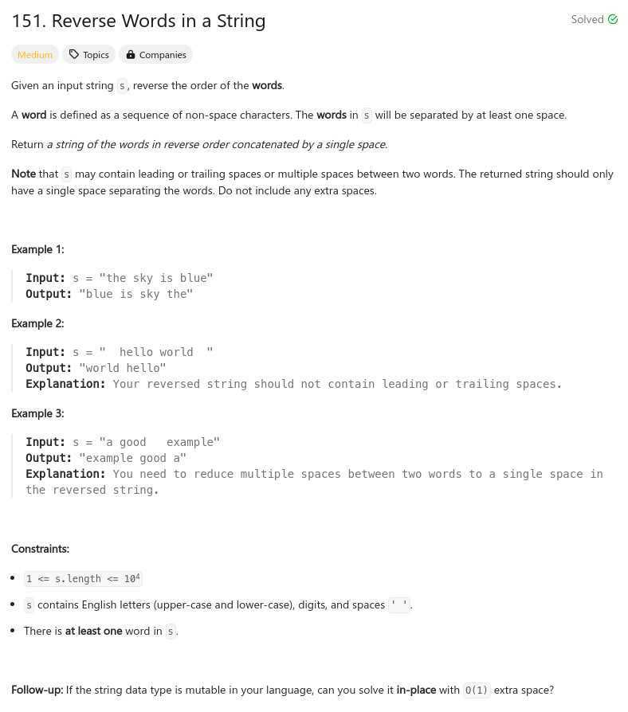

參考資訊：
https://cplusplus.com/reference/string/
https://stackoverflow.com/questions/216823/how-can-i-trim-a-stdstring
題目：

class Solution {
public:
string reverseWords(string s) {
string ret;
vector<string> t;
istringstream is(s);
while (is >> ret) {
t.push_back(ret);
}
ret.clear();
for (auto it = t.rbegin(); it != t.rend(); it++) {
ret += *it + " ";
}
return ret.erase(ret.find_last_not_of(' ') + 1);
}
};